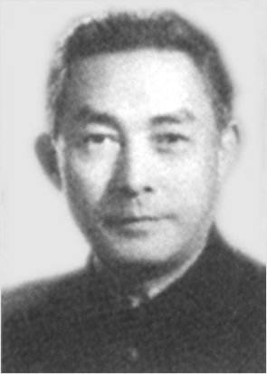

兰秋香不死，松晚翠方深。
中山大学毕业生在 github
把信息合并进来十分简单
- 要求先有一个github的账号和编写html代码。
- 到 https://github.com/sysu/graduated 点击 fork 创建一个本仓库的拷贝到你的账号。
- 修改你的仓库中的 index.html 文件，添加其他相关文件。
- 在你的仓库的分支选择器的旁边点击 New pull request 。
- Base Repository 选择 sysu/graduated , base 选择 master 。
- 点击 Create pull request 。
- 在 title 中简洁地说明你的修改，并在 Write 中简单地介绍自己和所作的修改。
- 点击 Create pull request 。
- 等待有权限人士的合并。
- 就是这么简单！如有困难，也不要害怕搜索 github pull request 或者到 issues 留言哦。
休闲区
| 照片收集计划 | ||
|---|---|---|
| 照片 | 说明 | 人物网站 |
| 孙中山先生。 | www.sysu.edu.cn (学校主页） | |
 |
首任校长邹鲁先生。原名邹澄生，广东省大埔县人，中华民国时期著名政治家。 | 邹鲁介绍(学校历史文化展示平台） |
|  | 冯乃超同志。1951年2月至1953年底任中山大学党支部书记、中山大学分党委党组书记，1954年11月至1955年8月任中山大学分党委书记，1956年6月至1965年初任中山大学党委第一书记。 | http://usc.sysu.edu.cn（中山大学服务中心） |
| 罗俊，湖北仙桃人。引力物理专家，博士生导师，长江特聘教授。2009年当选为中国科学院院士。现任中山大学党委副书记、校长。 | 校长办公室互联网首页 | |
 |
陈春声，广东省揭西县人，1959年8月出生于广东省汕头市澄海县，教授，博士生导师。现任中山大学党委书记（副部长级）。 | 学校网站的介绍 |
 |
qiao，或 Xueqiao Xu ，或 Joe Xu。 github上的sysu 创建者和维护者（Maintainer）。中山大学理学学士。CMU（卡耐基梅隆大学）硕士。 | 个人主页 |
| (暂无） | Maple, 或 humiao 。另一个 github 上的 sysu 创建者和维护者（Maintainer）。中山大学工学学士。 | 个人网页上的个人介绍 |
 |
Parano Yang，或 Chaoyu Yang。另一个 github 上的 sysu 的维护者。中山大学理学学士。UW（华盛顿大学）硕士。 | |

|
莫宇诚，或者 Norman ，或者 LTaoist 。另一个 github 上的 sysu 的维护者。中山大学工学学士。 | 联系页 |
| (暂无） | Junjie Huang，或者 huangjj27 。另一个 github 上的 sysu 的维护者。中山大学工学学士。 | 技术博客 |
 |
一张中山大学校友的老照片（集体照）。 | 中山大学历史文化展示 |
 |
中山大学沿革图。 | 中山大学历史文化展示 |
 |
许涤新校友。文化教育界人士。 | 中国社会科学网上的介绍 |
 |
何东平校友。社会服务界人士。 | 人民网的介绍（2012年） |
 |
方风雷校友。工商经济界人士。 | 社会媒体的介绍 |
| zhibo。一名校友。 | github | |
| liangzhanrui。一名校友。 | github | |
| 此个整理由 LTaoist 负责，未经上列全部人员书面同意，不代表有关人员的观点的赞同或反对。若你愿意公开你的照片，请将你的信息添加进来。 | ||
| 段子共享计划 | |||
|---|---|---|---|
| 录入时间 | 录入人 | 文本内容 | 出处 |
| 2019/7/21 | LTaoist |
关电脑
网上看到的：正在玩电脑，5岁的女儿跑过来要钱，我不给，女儿说：你不给，信不信我用遥控器把电脑关了！ 我：“你要是能遥控器关电脑，我就给你100块 ！” 说完就看见她用遥控器去戳了一下电脑的开关。。。 |
水木清华bbs |
| 2019/7/21 | LTaoist | 一位女士坐公交车，不小心公交车关门把他的右手食指给夹断了，她要起诉公交公司，要求公交公司赔偿200万元的赔偿金，律师说：“不好意思，女士，一根手指头应该是赔偿不了那么多的”，女士不乐意了，一直说必须赔偿200万，因为她知道值这个钱，律师疑惑的问到为什么，女士说：“怎么就不值了，我的那根手指是指挥我丈夫的呀”，律师一头黑线。 | 网络 |
| 2019/7/21 | LTaoist | 一天丈夫下班回家，妻子已经做好了饭菜，妻子说：“亲爱的你辛苦了，今天的菜你可以选择”，丈夫一听这个高兴，妻子今天对他太好了，于是丈夫问到：“那今天都是什么菜啊？”，妻子说：“西红柿炒鸡蛋”，丈夫说：“一个菜我有什么可以选择的？”，妻子这是说：“你可以选择吃或者是不吃”。 | 网络 |
| 欢迎原创和转载到此处。格式参考如上。 | |||
综合区
| 校友优惠折扣 | ||
|---|---|---|
| 优惠单位 | 优惠限制 | 优惠获取 |
| 欢迎添加。推荐为终身校友优惠。 | ||
| 校友留言广告 | ||||
|---|---|---|---|---|
| 有效时间 | 级别与学院 | 学位 | 信息 | 留言者 |
| 2019～2039 | 2011级软件学院 | 学士 | 莫愁前路无知己，天下谁人不识君。 | LTaoist |
| 欢迎添加，内容不限。 | ||||
| 校友企业联系 | |||
|---|---|---|---|
| 创始人 | 关键字 | 联系须知 | 专用渠道 |
| 欢迎添加，一人一栏。 | |||